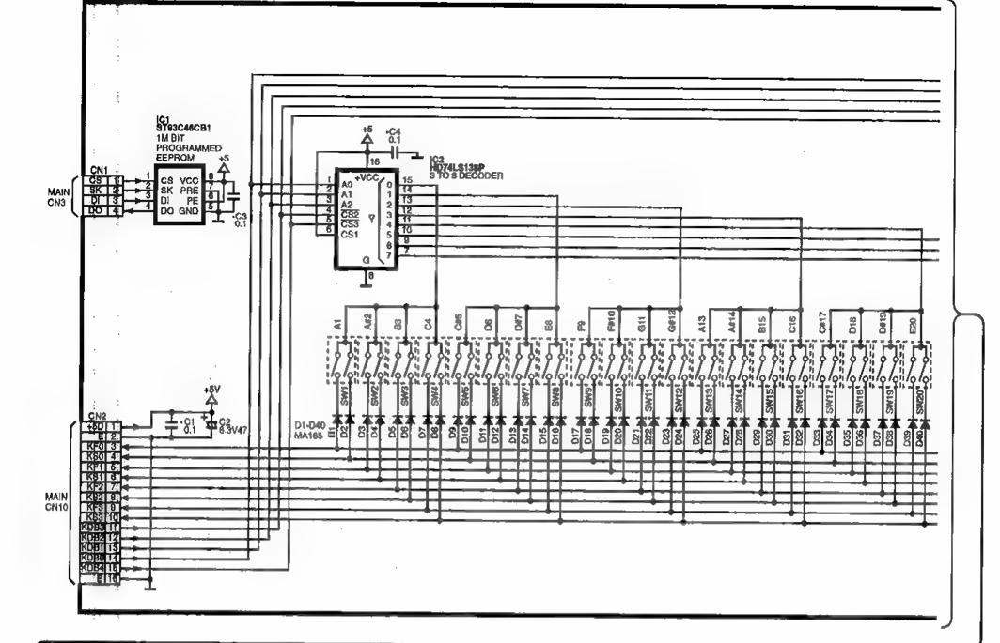
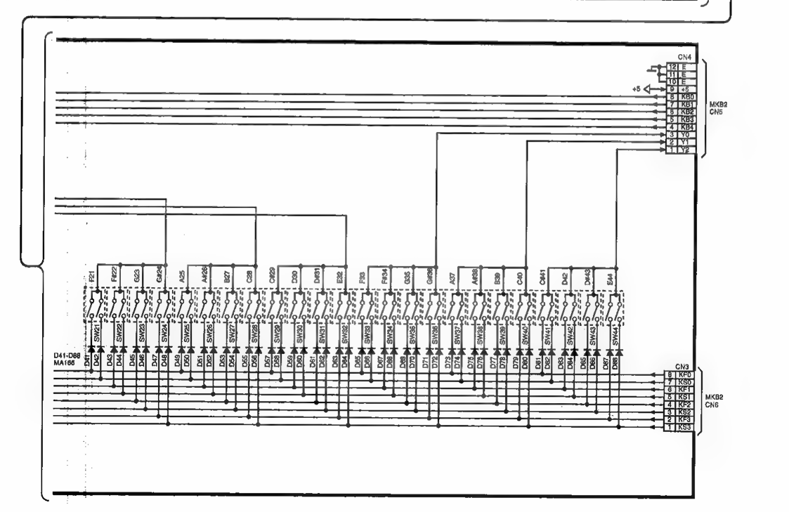

Grundlagen zur Tastenerkennung

Die Tasten werden über eine keypad-Matrix mit Shift-Registern angesprochen.
Pro Klaviertaste sind zwei Taster verbaut.
16 Pin Flachbandkabel
Pin 1: +5 V Pin 2: GND Pin 3,4,5,6,7,8,9,10: 8 rows Pin 11-15: columns über Shift-Register Pin 16: GND
HD74LS138P 3 to 8 Decoder 8*8 = 64 Taster = 32 Tasten pro Decoder
Insgesamt sind 3 Decoder verbaut. Es könnten also 96 Tasten angesprochen werden.
14 -> 1 = A0 = A
13 -> 2 = A1 = B
12 -> 3 = A2 = C
| 12 | 13 | 14 | Pin LOW |
|---|---|---|---|
| C | B | A | |
| 0 | 0 | 0 | 1 |
| 0 | 0 | 1 | 2 |
| 0 | 1 | 0 | 3 |
| 0 | 1 | 1 | 4 |
| 1 | 0 | 0 | 5 |
| 1 | 0 | 1 | 6 |
| 1 | 1 | 0 | 7 |
| 1 | 1 | 1 | 8 |
Alle anderen Pins sind immer HIGH.
Die Enabled-Pins der 3 Dekoder sind unterschiedlich verdrahtet:
Dekoder 1:
15 -> 5 = CS3
11 -> 4 = CS2
+5V -> 6 = CS1
Dekoder 2:
GND -> 4 = CS2
15 -> 5 = CS3
11 -> 6 = CS1
Dekoder 3:
GND -> 4 = CS2
11 -> 5 = CS3
15 -> 6 = CS1
Der Dekoder ist aktiv, wenn CS1 HIGH und CS2 und CS3 LOW sind.
Über 11 und 15 wird jeweils nur ein Dekoder aktiviert:
11: 0 , 15: 0
D1: CS3 = 0, CS2 = 0, CS1 = 1
D2: CS3 = 0, CS2 = 0, CS1 = 0
D3: CS3 = 0, CS2 = 0, CS1 = 0
11: 1, 15: 0
D1: CS3 = 0, CS2 = 1, CS1 = 1
D2: CS3 = 0, CS2 = 0, CS1 = 1
D3: CS3 = 1, CS2 = 0, CS1 = 0
11:0, 15: 1
D1: CS3 = 1, CS2 = 0, CS1 = 1
D2: CS3 = 1, CS2 = 0, CS1 = 0
D3: CS3 = 0, CS2 = 0, CS1 = 1

int inPin[] = { 3, 4, 5, 6, 7, 8, 9, 10 };
int binPin[] = { A0, 13, 12 };
int steuerPin[] = { 11, A1 };
int wert[196];
int anz;
void setup() {
Serial.begin(9600);
for (int i = 0; i < 8; i++) {
pinMode(inPin[i], INPUT_PULLUP);
}
for (int i = 0; i < 3; i++) {
pinMode(binPin[i], OUTPUT);
}
pinMode(steuerPin[0], OUTPUT);
pinMode(steuerPin[1], OUTPUT);
anz = 0;
Serial.println("Setup abgeschlossen!");
}
void auslesenDekoder(int c1, int c2) {
digitalWrite(steuerPin[0], c1);
digitalWrite(steuerPin[1], c2);
for (int i = 0; i < 8; i++) {
Serial.print(digitalRead(inPin[i]));
Serial.print(',');
if (digitalRead(inPin[i]) == LOW) {
wert[anz] = inPin[i];
anz++;
}
Serial.println();
}
}
void auslesen(int a1, int a2, int a3) {
digitalWrite(binPin[0], a1);
digitalWrite(binPin[1], a2);
digitalWrite(binPin[2], a3);
auslesenDekoder(0, 0); // Dekoder1
auslesenDekoder(1, 0); // Dekoder2
auslesenDekoder(0, 1); // Dekoder3
}
void loop() {
anz = 0;
auslesen(0, 0, 0);
auslesen(0, 0, 1);
auslesen(0, 1, 0);
auslesen(0, 1, 1);
auslesen(1, 0, 0);
auslesen(1, 0, 1);
auslesen(1, 1, 0);
auslesen(1, 1, 1);
}